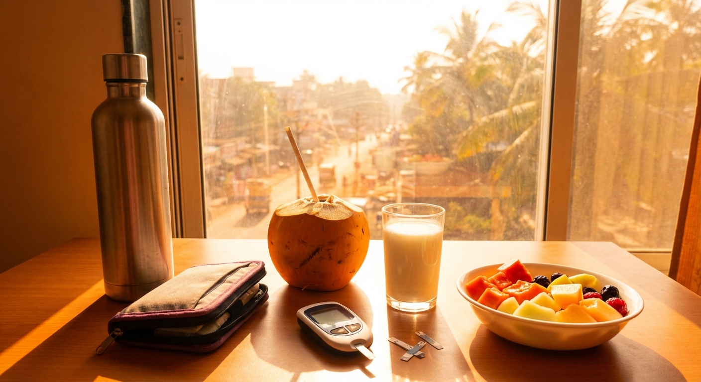

Every summer, Indian hospitals see a 25-35% spike in diabetes-related emergencies. Heat waves that push temperatures past 45°C in cities like Delhi, Nagpur, and Ahmedabad create a perfect storm for diabetics — insulin degrades faster, dehydration concentrates blood sugar, and heat-induced hypoglycemia catches people off guard.
With 101 million diabetics in India and summer lasting 4-5 months (March to July), this isn't a niche problem. Yet most diabetes guides are written for Western climates where "hot" means 30°C. Indian diabetics face a fundamentally different challenge.
This guide covers everything you need to know to manage diabetes safely through Indian summers — from insulin storage hacks to the best (and worst) summer drinks for blood sugar.
📋 Table of Contents
- How Heat Directly Affects Blood Sugar
- Insulin Storage in Indian Summers (Critical!)
- What CGM Data Shows in Hot Weather
- Hydration Guide: How Much Water Do Diabetics Need?
- 10 Best Summer Drinks for Diabetics in India
- 5 Worst Summer Drinks for Blood Sugar
- Medication Safety in Summer Heat
- Exercising Safely with Diabetes in Summer
- Recognizing Heat Emergencies in Diabetics
- Summer Diabetes Safety Checklist
- FAQs
How Heat Directly Affects Blood Sugar
Most diabetics don't realize that temperature itself changes how their body handles glucose. Here's the science:
1. Faster Insulin Absorption
When it's hot, blood vessels near the skin dilate to release heat. This increases blood flow to subcutaneous tissue — exactly where insulin is injected. The result: insulin absorbs 20-30% faster than normal, causing unexpected blood sugar drops.
2. Dehydration Concentrates Glucose
When you sweat and lose fluid, the glucose in your blood becomes more concentrated. A person with a true glucose of 140 mg/dL who is 5% dehydrated may see readings of 160-170 mg/dL on their glucometer. This leads to:
- Overcorrection with extra insulin (causing later hypos)
- False sense of "poor control" when the real issue is hydration
- Kidney stress from concentrated blood filtering through already-vulnerable diabetic kidneys
3. Impaired Sweating (Autonomic Neuropathy)
30-50% of long-standing diabetics have some degree of autonomic neuropathy — nerve damage that affects automatic body functions including sweating. This means:
- Reduced ability to cool down through sweat
- Core body temperature rises faster than non-diabetics
- 2-3x higher risk of heat exhaustion and heat stroke
- Often no warning signs until it's serious
4. Counter-Regulatory Hormone Chaos
Heat stress triggers cortisol and adrenaline release — both raise blood sugar. Combined with faster insulin absorption, you get a glucose rollercoaster: unexpected lows followed by rebound highs. CGM data shows summer glucose variability increases by 15-25% during heat waves.
Insulin Storage in Indian Summers (Critical!)
Insulin is a protein. Heat denatures it — like cooking an egg. Above 30°C, insulin starts losing potency. In Indian summers where ambient temperatures hit 40-47°C, this is a daily threat.
🚨 Insulin Temperature Danger Zones
| Temperature | Insulin Status | Action |
|---|---|---|
| 2-8°C | Ideal (unopened storage) | Refrigerator — main shelf, not door |
| 15-25°C | Safe (opened/in-use) | AC room, use within 28 days |
| 25-30°C | Acceptable but degrading | Use within 14 days, monitor glucose closely |
| 30-35°C | Losing 5-10% potency/week | Use cooling measures immediately |
| 35-40°C | Losing 10-20% potency/week | Insulin may be unreliable — check glucose frequently |
| 40°C+ | Rapid degradation | Discard if exposed for >1 hour |
Practical Insulin Storage Solutions for India
🏠 At Home
- Refrigerator (main shelf): Store unopened insulin at 2-8°C. Never in the door (temperature fluctuates) or near the freezer (freezing destroys insulin permanently)
- During power cuts: Wrap insulin in a wet cotton cloth and place in an earthen pot (matka). The evaporative cooling keeps temperature 8-10°C below ambient for 4-6 hours
- If no fridge: Use a thermos flask with a damp cloth wrapped around it. Replace the cloth every 2-3 hours
🚗 While Traveling
- Insulin cooling wallets: FRIO wallets (₹600-1,500 on Amazon India) use evaporative cooling crystals — just soak in water for 10 minutes and they keep insulin cool for 48 hours. No batteries needed
- Never leave insulin in the car: Car interiors reach 60-70°C in Indian summer sun. Even 15 minutes can destroy insulin
- Train/bus travel: Keep insulin in a small insulated bag with a frozen gel pack. Wrap gel pack in cloth to prevent freezing
- Air travel: Always carry insulin in hand luggage (cargo hold temperatures are unpredictable)
What CGM Data Shows in Hot Weather
Continuous Glucose Monitor data reveals clear patterns during hot weather that every Indian diabetic should know:
Pattern 1: The Heat Drop
Blood sugar drops 20-30 mg/dL within 1-2 hours of going outdoors in 38°C+ weather, even without exercise. This is from increased insulin absorption + vasodilation. Most dangerous for insulin users.
Pattern 2: The Dehydration Spike
After 3-4 hours without adequate water in heat, glucose rises 30-50 mg/dL from dehydration. This is a "false spike" — the actual glucose may not be that high, but concentrated blood reads higher.
Pattern 3: Overnight Instability
In homes without AC (majority of Indian households), overnight temperatures of 30-35°C cause more glucose variability during sleep. CGM shows 20-30% more time outside target range on hot nights vs. cool nights.
Pattern 4: The Ramadan/Fasting Risk
During summer fasting (Ramadan, Navratri, Ekadashi), dehydration risk doubles. Combined with heat, blood sugar swings can be extreme — both dangerous hypos and spikes. Diabetics must consult their doctor before fasting in summer.
Hydration Guide: How Much Water Do Diabetics Need?
Standard advice is "8 glasses a day" — but for Indian diabetics in summer, that's dangerously insufficient.
| Temperature | Activity Level | Daily Water Intake |
|---|---|---|
| 25-30°C (AC room) | Sedentary | 2.5-3 liters |
| 30-35°C (mild heat) | Light activity | 3-3.5 liters |
| 35-40°C (hot) | Moderate activity | 3.5-4.5 liters |
| 40°C+ (extreme heat) | Any outdoor time | 4-5 liters |
Signs You're Dehydrated (Don't Wait for Thirst!)
- Dark yellow urine: Should be pale straw color. Dark = dehydrated
- Dry mouth and lips despite drinking water
- Unexplained blood sugar rise of 30+ mg/dL without food
- Headache, dizziness, fatigue — often dismissed as "just the heat"
- Reduced urination: Less than 4-5 times a day is a red flag
10 Best Summer Drinks for Diabetics in India
1. 🥇 Plain Water (with a twist)
Blood sugar impact: Zero. Add cucumber slices, mint leaves, or a few tulsi leaves for flavor without any sugar. Keep a 1-liter bottle at your desk and finish it every 2-3 hours. Set phone reminders if needed.
2. 🥈 Chaas / Buttermilk
Blood sugar impact: Minimal (3-5 mg/dL). Traditional Indian buttermilk with roasted cumin, rock salt, curry leaves, and coriander. Zero added sugar, excellent probiotics for gut health, and replenishes electrolytes. Drink 1-2 glasses daily. The gold standard summer drink for Indian diabetics.
3. 🥉 Coconut Water (1 glass/day)
Blood sugar impact: 15-20 mg/dL. Contains 6g natural sugar per glass but also potassium (600mg), magnesium, and natural electrolytes. Limit to 1 tender coconut (200ml) per day. Best consumed fresh — packaged versions often have added sugar. Check labels.
4. Sugar-Free Nimbu Pani (Lemon Water)
Blood sugar impact: 2-5 mg/dL. Squeeze 1 lemon in 300ml water. Add rock salt (sendha namak) and a pinch of black salt. Do NOT add sugar or honey. If you need sweetness, use stevia. The vitamin C and citric acid actually help lower blood sugar response to the next meal.
5. Jeera Water (Cumin Water)
Blood sugar impact: May reduce glucose by 5-10 mg/dL. Boil 1 tsp cumin seeds in 500ml water for 5 minutes, strain, cool. Research shows cumin has anti-diabetic properties — it stimulates insulin secretion and improves insulin sensitivity. Drink warm or cold.
6. Sattu Drink (Bihar/UP Specialty)
Blood sugar impact: 10-15 mg/dL. Mix 2 tbsp sattu (roasted gram flour) in cold water with rock salt, lemon, and roasted cumin. High protein (20g/100g), keeps you full, and the slow-digesting protein has minimal glucose impact. One of India's best-kept secrets for diabetics.
7. Green Tea (Iced)
Blood sugar impact: Zero (may reduce glucose). Brew green tea, cool, add ice and lemon. EGCG in green tea improves insulin sensitivity by 15%. Consume 2-3 cups/day. Avoid bottled green tea — most contain 15-20g sugar.
8. Aam Panna (Raw Mango) — Homemade Sugar-Free
Blood sugar impact: 10-15 mg/dL (homemade version). Boil raw mango, extract pulp, blend with water, roasted cumin, black salt, and mint. Use stevia instead of sugar. Raw mango is low in sugar and rich in vitamin C. The commercial versions are loaded with sugar — always make at home.
9. Tulsi-Ginger Infusion
Blood sugar impact: May lower glucose. Steep fresh tulsi leaves and ginger slices in hot water for 10 minutes. Both tulsi and ginger have evidence-backed anti-diabetic effects. Cool and drink throughout the day. Add a pinch of black pepper to enhance absorption.
10. Sabja (Basil Seed) Water
Blood sugar impact: May reduce glucose. Soak 1 tbsp sabja seeds in water for 15 minutes — they swell and form a gel. Add to cold water with lemon. The soluble fiber slows glucose absorption and the seeds help with hydration (they hold water like chia seeds). Popular in South India and increasingly trendy.
5 Worst Summer Drinks for Blood Sugar
❌ Avoid These Completely
| Drink | Sugar Content | Blood Sugar Spike | Why It's Bad |
|---|---|---|---|
| Sugarcane Juice | 50-60g per glass | 80-110 mg/dL | Pure liquid sugar — one of the worst possible drinks for diabetics despite being "natural" |
| Mango Shake/Lassi | 40-55g per glass | 65-90 mg/dL | Mango + sugar + full-fat milk = glucose bomb |
| Rooh Afza / Sherbet | 30-40g per glass | 60-80 mg/dL | Concentrated sugar syrup with artificial colors. No nutritional value |
| Packaged Fruit Juice | 25-35g per glass | 55-75 mg/dL | Even "100% juice" has no fiber and spikes glucose. Real Fruit, Tropicana — all bad |
| Cold Drinks (Coke, Pepsi, Limca) | 35-40g per can | 60-80 mg/dL | Obviously terrible. Even "diet" versions may affect insulin response |
Medication Safety in Summer Heat
Insulin
- Faster absorption in heat → increased hypo risk
- Consider reducing dose by 10-20% on very hot outdoor days (consult doctor first)
- Monitor glucose before and after going outdoors
- Always carry glucose tablets/biscuits in summer
Metformin
- Generally safe in heat, but dehydration increases lactic acidosis risk (rare but serious)
- Extra hydration is essential — drink 500ml more than usual on hot days
- Store below 30°C — keep in AC room or cool place
Sulfonylureas (Glimepiride, Glipizide, Gliclazide)
- Highest hypo risk in summer — heat amplifies their glucose-lowering effect
- Carry snacks and glucose tablets at all times
- Monitor fasting and pre-meal glucose daily
- Ask your doctor about dose reduction in peak summer months
SGLT2 Inhibitors (Dapagliflozin, Empagliflozin)
- Increase urinary glucose and water loss → highest dehydration risk
- Drink extra 500-750ml water daily in summer
- Watch for signs of UTI (more common in heat)
- Consider pausing during severe heat waves (with doctor's guidance)
Test Strips & Glucometers
- Store test strips below 30°C (they degrade in heat, giving false readings)
- Don't leave glucometer in the car or direct sunlight
- If readings seem inconsistent, strips may be heat-damaged — use a fresh vial
Exercising Safely with Diabetes in Summer
Best Times to Exercise
- 5:00 - 7:00 AM: Before the heat builds up (ideal)
- 6:00 - 8:00 PM: After sunset when temperatures drop
- Never between 11 AM - 4 PM in peak summer — heat stroke risk is too high
Summer Exercise Rules for Diabetics
- Check blood sugar before exercising. If below 100 mg/dL, eat a small snack first
- Carry 500ml water and sip every 15 minutes during exercise
- Wear light cotton clothing — synthetic fabrics trap heat
- Exercise indoors when possible: Mall walking, gym, yoga at home, stair climbing
- Reduce intensity by 20-30% on days above 38°C
- Stop immediately if you feel dizzy, nauseous, or confused — could be hypo or heat exhaustion
Recognizing Heat Emergencies in Diabetics
Diabetics are at higher risk for heat-related illness. Know the warning signs:
| Condition | Symptoms | Action |
|---|---|---|
| Heat Cramps | Muscle cramps (legs, abdomen), sweating, mild fatigue | Move to shade, drink water with salt, rest. Check blood sugar |
| Heat Exhaustion | Heavy sweating, weakness, cold/clammy skin, nausea, headache, fast pulse | Move to AC/shade immediately, drink water, apply cool cloths. Check glucose — could be hypo |
| Heat Stroke 🚨 | High body temp (>40°C), confusion, hot/dry skin (no sweating), rapid pulse, loss of consciousness | MEDICAL EMERGENCY — Call 108/112 immediately. Cool the person with water/ice while waiting |
Summer Diabetes Safety Checklist
✅ Your Daily Summer Checklist
- ☐ Drink at least 3-4 liters of water throughout the day
- ☐ Check blood sugar 4-5 times (more frequently than winter)
- ☐ Verify insulin is stored properly (not warm to touch)
- ☐ Carry glucose tablets/biscuits when going outdoors
- ☐ Wear light, loose cotton clothing and a hat/umbrella
- ☐ Avoid outdoor activity between 11 AM - 4 PM
- ☐ Take your medications on time (set alarms)
- ☐ Keep a water bottle within arm's reach at all times
- ☐ Check feet daily (sweaty feet + diabetes = fungal infection risk)
- ☐ Apply sunscreen if going outdoors (sunburn stresses the body, raising glucose)
🎒 Summer Emergency Kit for Diabetics
Keep this kit ready from March to July:
- Glucose tablets (5-6 tabs)
- Glucometer + extra test strips (stored cool)
- Water bottle (1 liter minimum)
- ORS packets (sugar-free if available)
- Insulin cooling wallet (FRIO or similar)
- Diabetes ID card with emergency contacts
- Small snack (roasted chana, nuts)
- Umbrella or wide-brim hat
Frequently Asked Questions
Can I drink ORS (Oral Rehydration Solution) as a diabetic?
Standard ORS contains 13.5g glucose per liter — it will raise blood sugar by 20-30 mg/dL. Use it only for actual dehydration or heat illness, not as a regular drink. For daily electrolyte replacement, use chaas with rock salt, or sugar-free electrolyte packets (available at most pharmacies for ₹15-20).
Is AC necessary for diabetics in summer?
Not strictly necessary, but it significantly helps. AC keeps insulin safe, reduces heat stress on the body, and improves sleep quality (which directly affects blood sugar). If AC isn't affordable, use a cooler/fan, sleep with a wet sheet, and keep insulin in the fridge. Prioritize AC for the room where you sleep — nighttime heat causes the most glucose variability.
Should I eat ice cream in summer if I have diabetes?
Regular ice cream spikes blood sugar by 40-60 mg/dL. If you crave it, opt for: homemade frozen curd (dahi) pops with stevia, sugar-free ice cream brands (check actual carb content — many are still high), or a small serving of kulfi made with nuts and stevia. Limit to 1-2 times per week maximum, and never on an empty stomach.
Do glucometers give wrong readings in extreme heat?
Yes. Most glucometers are calibrated for 10-40°C. Above 40°C, readings can vary by 10-15%. Test strips degrade even faster. If you're testing outdoors in extreme heat, bring the glucometer to shade/AC first, wait 5 minutes, then test. Always store strips in their sealed container, not loose in a bag.
Is mango safe for diabetics in summer?
In strict moderation. One small slice (50-60g) of mango raises blood sugar by about 15-20 mg/dL. Eat it after a protein-rich meal (never alone), and limit to 2-3 times per week. Alphonso/Hapus has slightly lower GI than Totapuri. Never drink mango juice or milkshake — the liquid form spikes glucose 3x faster. Read our complete fruit guide for diabetics for more details.
Track Your Summer Blood Sugar Patterns
Hot weather affects everyone differently. Use our free blood sugar journal to track how heat impacts your glucose levels and find your personal patterns.
📊 Download Free Blood Sugar Journal
Founder, Health Gheware. Building AI-powered diabetes management tools for Indians. Data-driven approach to blood sugar control using CGM technology and evidence-based nutrition.
Read more →
Disclaimer: This article is for informational purposes only and is not a substitute for professional medical advice. Never adjust diabetes medication without consulting your doctor. Consult your endocrinologist before the summer season to discuss any medication changes. Individual responses to heat vary — monitor your blood sugar closely and seek medical help if you notice unusual patterns.